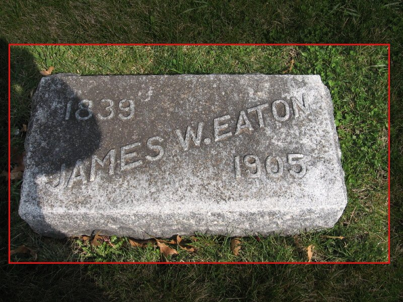

John Eaton d. 1905
3× great-grandfather of Shayla Nadah Alamdari, wife of Peter.
Also recorded as James W. Eaton.
John Eaton.
Family
- Partner
- John Eaton's wife d. 1912
- Children
- May Eaton 1874–1941 documented
Life events
| Event | Date | Place and details |
|---|---|---|
| Buried | Aug 1905 | Nebraska, United States3 |
| Origin | Nebraska, United States According to the family's 2015 tree2 |
Records


Sources
- Marriage of May Eaton and Edward A. Holt, 4 May 1898, Syracuse, Otoe County, Nebraska.
Name: May Eaton | Gender: Female | Race: White | Marriage Age: 23 | Record Type: Marriage | Birth Date: abt 1875 | Birth Place: Otoe, Nebraska | Marriage Date: 4 May 1898 | Marriage Place: Syracuse, Nebraska, USA | Marriage County Office: Otoe | Father: James W. Eaton | Mother: Mary E. Eaton | Spouse: Edward A. Holt
James W. Eaton (father of May Eaton; recorded as 'John Eaton' in the 2015 database)
- Peter's tree, danenberg.sql, 2007–2015, personae 184, provenance.
- Find a Grave Memorial #34040510: Judge James William Eaton (1839–1905), Memorial 34040510.
1839 / JAMES W. EATON / 1905 | Birth 6 Sep 1839 Saint Charles, St. Charles County, Missouri, USA | Death 20 Aug 1905 (aged 65) Syracuse, Otoe County, Nebraska, USA | Burial: Park Hill Cemetery, Syracuse, Otoe County, Nebraska
Gravestone and transcribed obituary at Park Hill Cemetery, Syracuse, Otoe County, Nebraska, for Judge James William Eaton (born 6 September 1839 at St. Charles, St. Charles County, Missouri; died 20 August 1905 at Syracuse, Otoe County, Nebraska; served four terms as Probate/County Judge of Otoe County, and personally issued his daughter May Eaton's marriage license on 2 May 1898 as "J. W. Eaton, County Judge").